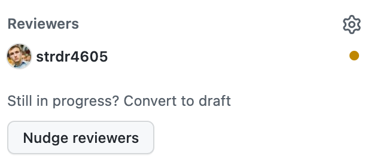

Nudge Github PR reviewers with Slack API
on Dragoș Străinu's blogYou know that moment when you have a Pull Request waiting for someone to review but days pass and no one is looking at it, so you have to manually ask reviewers in a public channel or privately. How we can automate this?
Previously I was using Bitbucket and Bitbucket Cloud have a cool feature to nudge reviewers from Slack and it will send a private message notifying reviewers to take a look at the Pull Request.
Now I am using Github with Github for Slack and it has a feature to remind reviewers at a specific time of the day about PRs. But I could not find a nudge reviewer feature. I searched on the Slack app store but still had no success.
I decided to do an MVP for my project and team, not publicly available, but you can create the same feature for your project/team/company.
Slack App
To publish messages to Slack workspace you need to create a Slack App.
- Click Create New App button
- Pick From scratch
- Set App Name to
<Company name> PR nudge(or any other suitable name) - Pick your company workspace
- Press Create App
Next, we need to create a webhook for a Slack channel.
- In Add features and functionality section select Incoming Webhooks
- Click Add New Webhook to Workspace and select a channel where all messages from Github for Slack goes (Usually this channel is named
#dev)
Now we have a webhook that will post messages to our channel, next we need to call this webhook from somewhere.
Userscript
Let's build a userscript that will add a Nudge reviewers button into Github PR page, that when clicked will nudge in Slack, reviewers that are awaited for review.
If you don't know about userscripts you can check my explanation video: You Don't Know *.user.js.

First, your need a Userscript manager extension, let's install Tampermonkey. After installation open Tampermonkey and create a new script.
Userscript Header
We start with:
// ==UserScript==
// @name <Your Company> PR nudge
// @namespace https://github.com/<Your Company>
// @version 1.0.0
// @description Nudge PR reviewers
// @author You
// @match https://github.com/<Your Company>/*/pull/*
// @icon https://www.google.com/s2/favicons?sz=64&domain=github.com
// @grant GM_xmlhttpRequest
// @connect slack.com
// ==/UserScript==
(function () {
"use strict";
// Your code here...
})();
We need:
@match https://github.com/<Your Company>/*/pull/*to run the script only when navigating to a PR page, such ashttps://github.com/Org/Repo/pull/4605@grant GM_xmlhttpRequestto do requests to Slack webhook@connect slack.comto allow requests to Slack
Nudge reviewers button
Now let's create a Nudge reviewers button and add it to the Reviewers section:
(function () {
"use strict";
const PR_NUDGE_WEBHOOK =
"https://hooks.slack.com/services/********/***********/************************";
const nudgeButton = document.createElement("button");
nudgeButton.innerText = "Nudge reviewers";
nudgeButton.className =
"btn btn-sm js-details-target d-inline-block float-left float-none m-0 mr-md-0 js-title-edit-button";
const reviewersFormElement = document.getElementById(
"reviewers-select-menu"
).parentElement;
})();

Who needs to review
This function will return a list with Github nicknames that should review this PR.
function getAllAwaiting() {
const allReviewers = Array.from(reviewersFormElement.querySelectorAll("p"));
const awaiting = allReviewers.filter((reviewerEl) =>
reviewerEl
.querySelector("span[aria-label]")
.getAttribute("aria-label")
.startsWith("Awaiting")
);
const awaitingNicknames = awaiting.map(
(reviewerEl) => reviewerEl.querySelectorAll("a")[1].innerText
);
return awaitingNicknames;
}
Mapping Github user with Slack user
Here is a sad part of this script, because we need to map Github with Slack, to know whom to nudge on Slack. At this point, this is a manual process and this is the only downside of this solution.
(function () {
"use strict";
const GithubSlackMap = {
strdr4605: "U**********",
...
};
const PR_NUDGE_WEBHOOK =
...
To find the member ID from Slack, go to a Slack user profile, click More, and click Copy member ID. If you have 30+ engineers in your team it may take a while. For me, it was 11 engineers.
If you have an idea how to automate this, let me know.
onNudgeBtnClick
Now let's gather all the data and sent a request to Slack webhook.
Slack has a specific format style for messages, so to tag people we need slackMention function.
function slackMention(githugNickname) {
return GithubSlackMap[githugNickname]
? `<@${GithubSlackMap[githugNickname]}>`
: githugNickname;
}
function onNudgeBtnClick(e) {
e.preventDefault();
const prLink = window.location.href;
const prTitle = document.title.split(" by ")[0] || prLink;
const awaitingReviewers = getAllAwaiting();
if (!awaitingReviewers.length) {
return;
}
const dataObj = {
text: `Hey ${awaitingReviewers.map(
slackMention
)},\nI really need your review on <${prLink}|${prTitle}>. 🥺😇🙏😊`,
};
GM_xmlhttpRequest({
fetch: true,
method: "POST",
url: PR_NUDGE_WEBHOOK,
data: JSON.stringify(dataObj),
responseType: "json",
nocache: true,
onload: (response) => console.log({ response }),
onerror: (err) => console.error({ err }),
});
}
Add button to the page
nudgeButton.addEventListener("click", onNudgeBtnClick);
setTimeout(() => {
reviewersFormElement.appendChild(nudgeButton);
}, 1000);
Final result
// ==UserScript==
// @name <Your Company> PR nudge
// @namespace https://github.com/<Your Company>
// @version 1.0.0
// @description Nudge PR reviewers
// @author You
// @match https://github.com/<Your Company>/*/pull/*
// @icon https://www.google.com/s2/favicons?sz=64&domain=github.com
// @grant GM_xmlhttpRequest
// @connect slack.com
// ==/UserScript==
(function () {
"use strict";
const GithubSlackMap = {
strdr4605: "U**********",
...
};
const PR_NUDGE_WEBHOOK =
"https://hooks.slack.com/services/********/***********/************************";
const nudgeButton = document.createElement("button");
nudgeButton.innerText = "Nudge reviewers";
nudgeButton.className =
"btn btn-sm js-details-target d-inline-block float-left float-none m-0 mr-md-0 js-title-edit-button";
const reviewersFormElement = document.getElementById(
"reviewers-select-menu"
).parentElement;
function getAllAwaiting() {
const allReviewers = Array.from(reviewersFormElement.querySelectorAll("p"));
const awaiting = allReviewers.filter((reviewerEl) =>
reviewerEl
.querySelector("span[aria-label]")
.getAttribute("aria-label")
.startsWith("Awaiting")
);
const awaitingNicknames = awaiting.map(
(reviewerEl) => reviewerEl.querySelectorAll("a")[1].innerText
);
return awaitingNicknames;
}
function slackMention(githugNickname) {
return GithubSlackMap[githugNickname]
? `<@${GithubSlackMap[githugNickname]}>`
: githugNickname;
}
function onNudgeBtnClick(e) {
e.preventDefault();
const prLink = window.location.href;
const prTitle = document.title.split(" by ")[0] || prLink;
const awaitingReviewers = getAllAwaiting();
if (!awaitingReviewers.length) {
return;
}
const dataObj = {
text: `Hey ${awaitingReviewers.map(
slackMention
)},\nI really need your review on <${prLink}|${prTitle}>. 🥺😇🙏😊`,
};
GM_xmlhttpRequest({
fetch: true,
method: "POST",
url: PR_NUDGE_WEBHOOK,
data: JSON.stringify(dataObj),
responseType: "json",
nocache: true,
onload: (response) => console.log({ response }),
onerror: (err) => console.error({ err }),
});
}
nudgeButton.addEventListener("click", onNudgeBtnClick);
setTimeout(() => {
reviewersFormElement.appendChild(nudgeButton);
}, 1000);
})();
Now when clicking Nudge reviewers your teammates will be notified and will review your changes faster.
Final step
Don't expose webhook URL to the public!
Add the script to a private repo(company-userscripts) in your Github org.
Name it PR-nudge.user.js.
Tell teammates to install Tampermonkey and send them:
https://github.com/Org/org-userscripts/blob/master/PR-nudge.user.js?raw=1
to add the script on their machine.